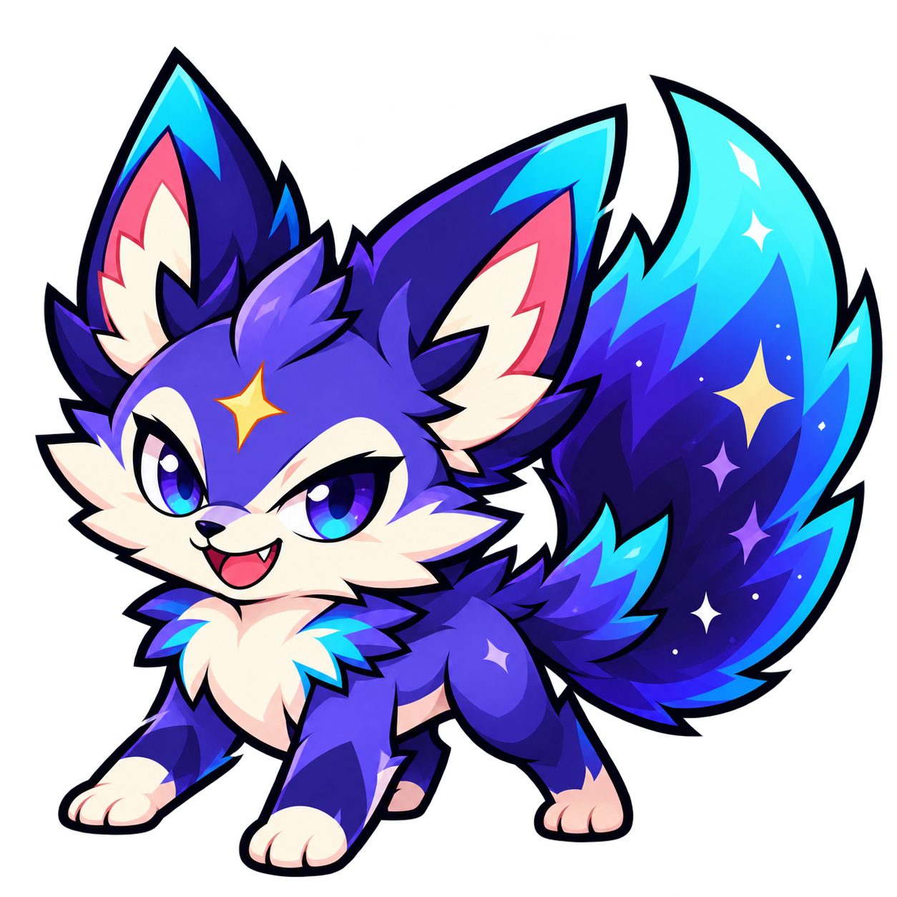
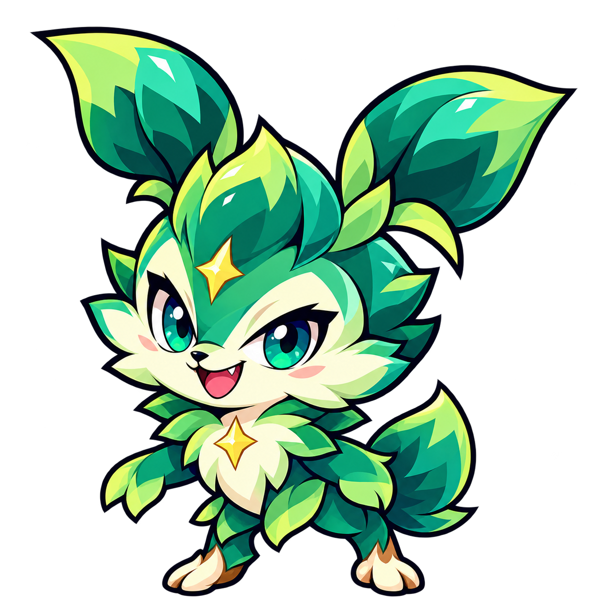
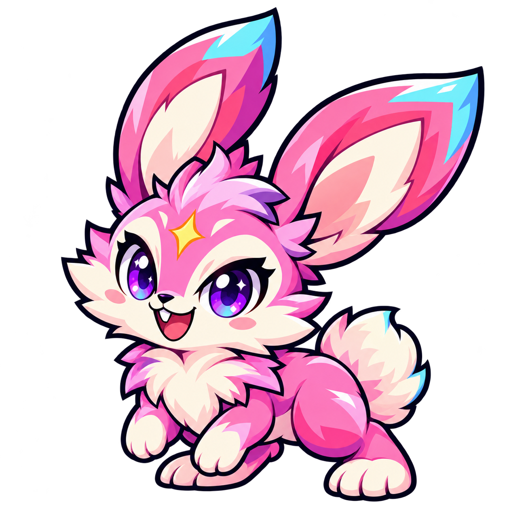
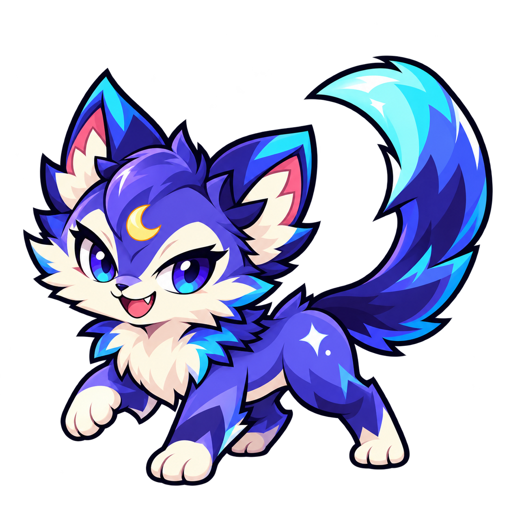
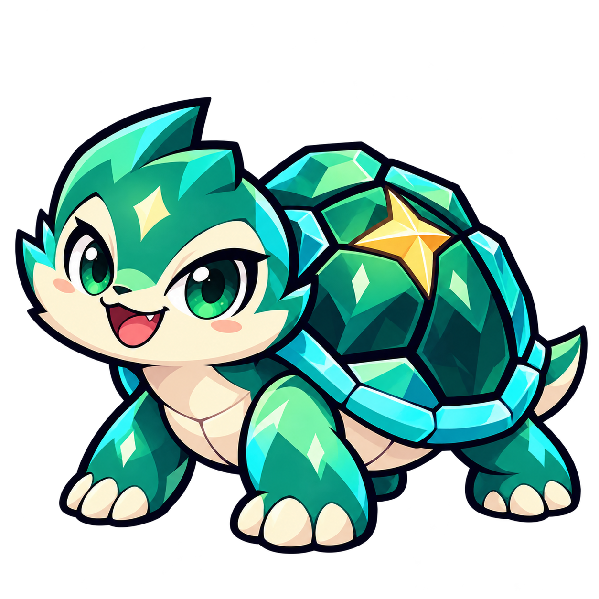

NORMAL · 1 HÌNH THÁI
Hồ Ly Tinh Vân
Tinh nghịch và tự tin, giữ tai lớn, đuôi sao chổi xanh và dấu sao vàng của mẫu A.
Tải PNG nền trong suốtĐỢT 1/5 ĐÃ ĐƯA VÀO GAME
Năm loài Normal đã có ảnh riêng, nền trong suốt, dùng thật tại Trạm Sao, bộ sưu tập và trong trận Vệ binh. Mỗi loài Normal có một hình thái hoàn chỉnh sau khi nở. Cấp và XP tiếp tục tăng nhưng không biến thành hình thái khác.

Tinh nghịch và tự tin, giữ tai lớn, đuôi sao chổi xanh và dấu sao vàng của mẫu A.
Tải PNG nền trong suốt
Một mầm cây biết đi, sắc xanh ngọc và những mảng lá sắc nét; không dùng lại hình dáng hồ ly.
Tải PNG nền trong suốt
Tai dài, đuôi bông và tư thế sẵn sàng nhảy; tông hồng kẹo với các điểm nhấn xanh.
Tải PNG nền trong suốt
Nét mặt láu lỉnh, đuôi cong, dấu trăng trên trán; dáng mèo nhỏ gọn khác hồ ly.
Tải PNG nền trong suốt
Mai ngọc lục với mảng màu rõ, dáng thấp và vững; thân thiện nhưng vẫn tự tin.
Tải PNG nền trong suốt| Đợt | Nhóm | Loài | Hình thái / loài | Số hình mới | Trạng thái |
|---|---|---|---|---|---|
| 1 | Normal | 5 | 1 | 5 | Đã vào game |
| 2 | Rare | 5 | 2 | 10 | Chưa vẽ |
| 3 | Epic | 5 | 2 | 10 | Chưa vẽ |
| 4 | Legend | 5 | 3 | 15 | Chưa vẽ |
| 5 | Rainbow | 5 | 3 | 15 | Chưa vẽ |
| Tổng cộng | 25 loài | 55 hình thái | Không tính ảnh trứng | ||
Quy tắc số bậc đã được áp dụng: Normal 1 bậc; Rare/Epic 2 bậc; Legend/Rainbow 3 bậc. Bậc mới mở ở cấp 8 và 16 tùy nhóm. Chỉ 5 loài Normal đã có bộ ảnh mới; các loài còn lại tạm dùng hình minh họa cũ cho đến đợt của mình. XP, đồ sở hữu, vé, xu, lịch sử quay và tiến độ học được giữ nguyên.